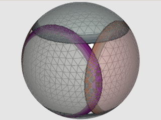

|  | This convex is the intersection of six rather large halfspaces (holes) which yield six unconnected patches. |
CONVEX CARTESIAN
1 0 0 -0.6
0 1 0 -0.6
0 0 1 -0.6
-1 0 0 -0.6
0 -1 0 -0.6
0 0 -1 -0.6
REGION CONVEX CARTESIAN
1 0 0 -0.6
0 1 0 -0.6
0 0 1 -0.6
-1 0 0 -0.6
0 -1 0 -0.6
0 0 -1 -0.6
Region reg = new Region(); Convex con = new Convex(); con.Add( new Halfspace(1.0, 0.0, 0.0, false, -0.6)); con.Add( new Halfspace(0.0, 1.0, 0.0, false, -0.6)); con.Add( new Halfspace(0.0, 0.0, 1.0, false, -0.6)); con.Add( new Halfspace(-1.0, 0.0, 0.0, false, -0.6)); con.Add( new Halfspace(0.0, -1.0, 0.0, false, -0.6)); con.Add( new Hslfspace(0.0, 0.0, -1.0, false, -0.6)); List<Int64Pair> rangelist = Cover.Hidrange(reg);
There are 8 corners with 4 partial trixels each. Each of these forms a single run of level 20 HtmID numbers, and therefore create a single range. This is a coincidence. In general, we can not presume to be this lucky. One such corner is seen above
9878424780800, 9895604649983 10977936408576, 10995116277759 12077448036352, 12094627905535 13176959664128, 13194139533311 14276471291904, 14293651161087 15375982919680, 15393162788863 16475494547456, 16492674416639 17575006175232, 17592186044415